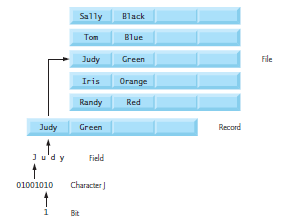

Week 8
This week covered reading and writing files and the use of fseek. We used
Charlie Blatter's old slides rather than the usual textbook publisher slides.
Files and Streams
Files provide us with a long-term way to store large amounts of data.
Data Hierarchy
- bit is the smallest data item. It can be either a single 0 or a single 1.
- byte/char is 8 bits. It can be used to store a ascii character.
- field is a group of bytes/chars which convey a meaning such as a name.
- record is a group of several related fields, such as a
structor a row. - file is a collection of records.
- database is a group of related files

In C, each file is viewed as a sequential stream of bytes. Each file ends with a end-of-file marker or at a specific byte recorded in a system-maintained, administrative data structure (platform-dependent).
When a file is opened, C associates a stream with it.
FILE struct
Opening a file returns a pointer to a FILE struct which contains the
information that the program needs to process the file.
This includes a file descriptor which is an index into an operating-system array called the open file table. Each element in that array contains a file control block (FCB) which the OS uses to administer a particular file.
When program execution begins, C opens three streams automatically:
- The standard input stream receives input from the keyboard.
- The standard output stream displays output on the screen.
- The standard error stream displays error messages on the screen.
We can then use the FILE pointers stdin, stdout, and stderr to interact
with these streams.
Files in C have no inherent concept of structured data or records at the language level; the programmer must explicitly define and manage the file’s structure.
Note
This "structure" refers to the logical organization of file
contents and should not be confused with the FILE struct used by the
standard I/O library.
File Access Methods
In C, there are two primary ways to access data in a file: sequential access and random access. The choice of method depends on how the data is organized and how it needs to be processed.
Sequential Access Files (Text)
Sequential access is one of the most common methods used to process files in C, especially when working with text. These files are often structured as a series of records, with each record representing a logical grouping of related data such as a line of comma-separated values.
File Modes for Sequential Access
| Mode | Description | Notes / Use Case |
|---|---|---|
r |
Open an existing file for reading. | Fails if file doesn't exist. You cannot write to the file in this mode. |
w |
Create a file for writing. Discards existing contents if file exists. | Use when starting fresh; overwrites any existing file. |
a |
Open or create a file for writing at the end of the file. | Appends to existing content; creates file if it doesn’t exist. |
r+ |
Open an existing file for both reading and writing. | Allows random-access-like reading and writing. Fails if file doesn't exist. |
w+ |
Create a file for reading and writing. Overwrites if file exists. | Useful when you want both read and write access but don't need existing content. |
a+ |
Open or create a file for reading and writing. Writes go to the end. | You can read anywhere, but writes always append. Useful for logs or journals. |
Warning
Sequential text files cannot be modified safely in place. Changing any part of a record can shift all later data because field lengths vary.
Fields may differ in size. For example, these integers:
134-890
all represent int values in memory but occupy different numbers of
characters on disk.
Since record boundaries depend on delimiters such as newlines, commas, or tabs, overwriting or removing characters can misalign later records and corrupt the file structure.
Standard Library Read/Write Functions
fgetc(FILE *fp)
Reads a single character from the file.
fgetc(stdin)is equivalent togetchar().
fputc(int c, FILE *fp)
Writes a single character to the file.
fputc('a', stdout)is equivalent toputchar('a').
fgets(char *str, int n, FILE *fp)
Reads a line (up to n-1 characters or newline).
- Automatically null-terminates the string.
fputs(const char *str, FILE *fp)
Writes a null-terminated string to the file (without appending a newline).
fscanf(FILE *fp, ...) / fprintf(FILE *fp, ...)
- File-based versions of
scanfandprintf.
Sequential access is efficient when you want to process every line or record in order, such as when reading configuration files, logs, or lists of values.
Random Access Files (Binary)
Random access allows the program to jump directly to any position in the file and read or write data without processing earlier records. This is ideal when working with fixed-size binary records, where each record occupies the same number of bytes.
These files are typically used when you need predictable storage layouts, efficient updates, or direct lookups by record number.
File Modes for Random Access
| Mode | Description | Notes / Use Case |
|---|---|---|
rb |
Open an existing binary file for reading. | Fails if file doesn’t exist. Reads raw bytes without text translation. |
wb |
Create a binary file for writing. Overwrites if file exists. | Use when generating a new binary dataset from scratch. |
ab |
Open or create a binary file for appending. Writes go to the end. | Appending fixed-size records; cannot overwrite previous records. |
rb+ |
Open an existing binary file for both reading and writing. | The standard choice for random access; allows updates to any record. |
wb+ |
Create a binary file for reading and writing. Overwrites if file exists. | Use when you need full read/write support but do not need the old contents. |
ab+ |
Open/create a binary file for reading and writing; writes append. | Allows random reads but appends on writes. Same semantics as a+ but binary. |
Standard Library Random-Access Functions
fseek(FILE *fp, long offset, int origin)
Moves the file position indicator to a specific byte offset.
offsetmay be positive or negative.-
originis one of: -
SEEK_SET— beginning of file SEEK_CUR— current positionSEEK_END— end of file- Used to jump directly to a record location in fixed-length files.
ftell(FILE *fp)
Returns the current byte offset from the beginning of the file.
- Returns a
long. - Works only after successful positioning with
fseek. - Commonly used to compute record numbers or debug file navigation.
rewind(FILE *fp)
Resets the file position indicator to byte offset 0 and clears EOF/error flags.
- Equivalent to:
fseek(fp, 0, SEEK_SET);
clearerr(fp);
fread(void *buffer, size_t size, size_t count, FILE *fp)
Reads raw bytes from the file into memory.
- Reads
countitems each ofsizebytes. - Does not parse or interpret text; it copies bytes exactly.
- Ideal for reading fixed-size structs:
fread(&client, sizeof(client), 1, fp);
fwrite(const void *buffer, size_t size, size_t count, FILE *fp)
Writes raw bytes from memory to the file.
- Writes
countitems each ofsizebytes. - Commonly used to update an existing record after seeking to its offset:
fwrite(&client, sizeof(client), 1, fp);